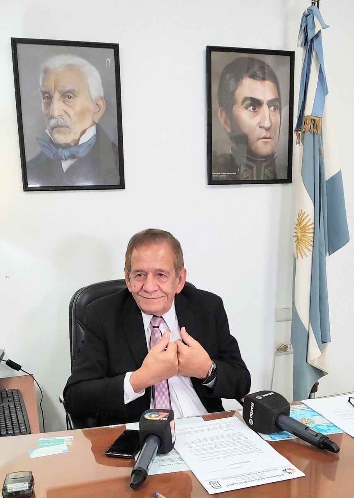
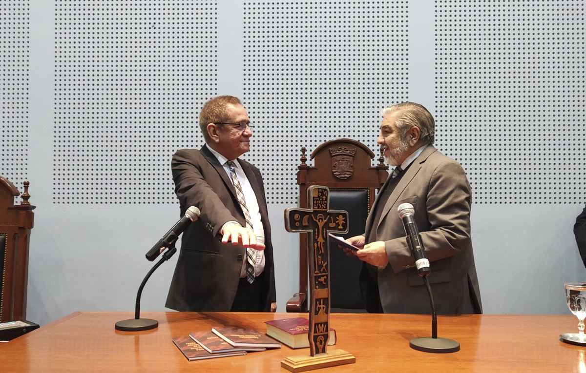

Reclamos
Web, WhatsApp, barrios y oficina, en una sola pantalla.
🔔
| N.º | Vecino | Tema | Barrio | Canal | Estado |
|---|
Mapa de reclamosCiudad Capital
Abiertos por tema
Contá tu problema desde el celular, por la web o por WhatsApp, y seguí tu caso hasta que se resuelva. Sin filas, sin papeles, sin volver a la oficina.


Elegido por el Concejo Deliberante de la ciudad y reelecto en 2024 para un nuevo período. Integra la Asociación de Defensores del Pueblo de la República Argentina (ADPRA).
“Es un nuevo desafío para todos nosotros, en el cual renovamos la promesa de esforzarnos en la defensa de los derechos de los ciudadanos de nuestra ciudad.”— Luis Ger, al ser reelecto (agosto de 2024)
Casos reales gestionados por la Defensoría, tomados de sus propias noticias. Con el sistema, cada historia así queda registrada, medida y visible.
Si no sabés cuál elegir, tocá “Otro tema” y nosotros lo derivamos.
Contalo con tus palabras. Si tenés fotos o documentos, sumalos.
Así sabemos a quién reclamar y cuántos vecinos tienen el mismo problema.
Solo los ve la Defensoría. Te avisamos cada novedad por WhatsApp.
Este es tu número. También te lo mandamos por WhatsApp.
Con este número podés seguir tu caso cuando quieras.
Demostración: en esta maqueta los datos no se envían a la Defensoría.
El WhatsApp oficial de la Defensoría atiende las 24 horas, los 365 días. No hace falta saber a qué área ir ni completar formularios.
Web, WhatsApp, barrios y oficina, en una sola pantalla.
| N.º | Vecino | Tema | Barrio | Canal | Estado |
|---|
Se arma solo con lo que entra al sistema. Para decidir dónde poner el esfuerzo y para rendir cuentas.
WhatsApp y la web le llegan a quien antes no se acercaba a la oficina.
Con el sistema, el informe de cada año se genera solo, con los números reales de la gestión, listo para presentar al Concejo Deliberante y publicar.